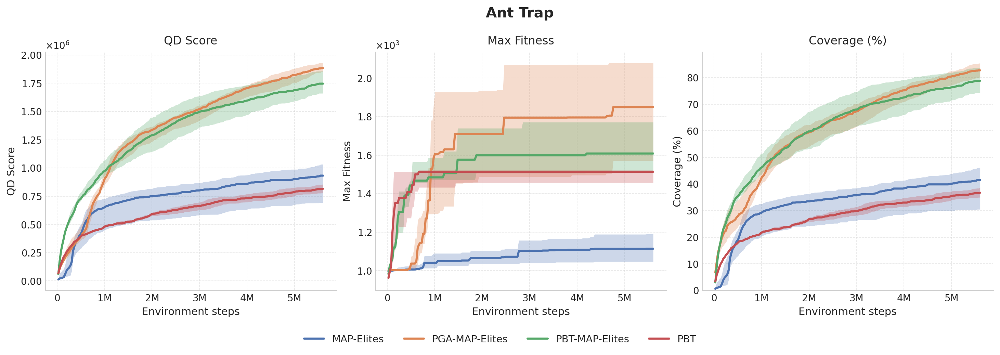
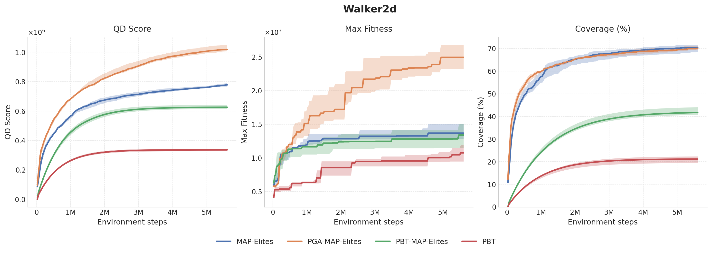
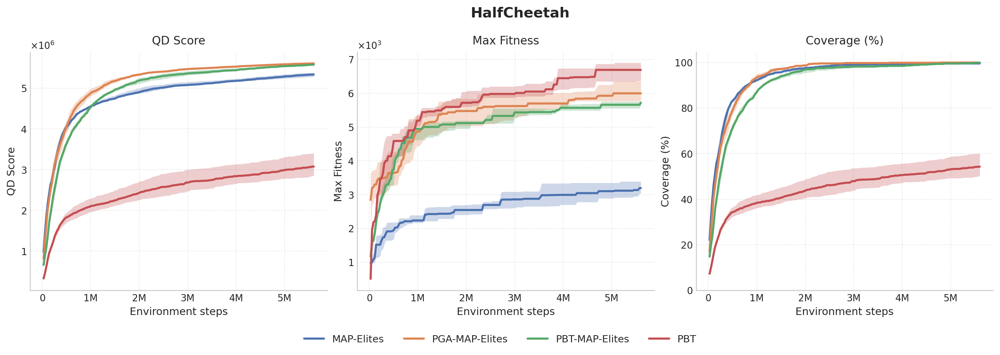
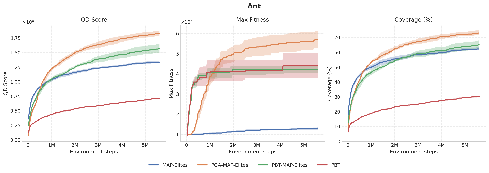
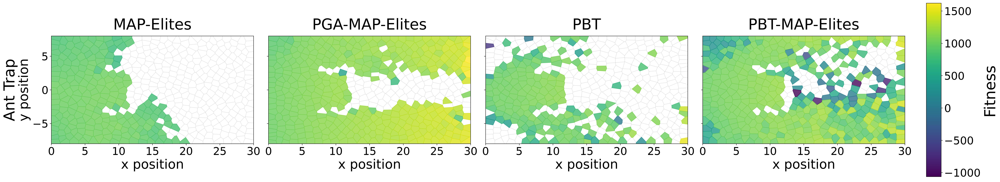
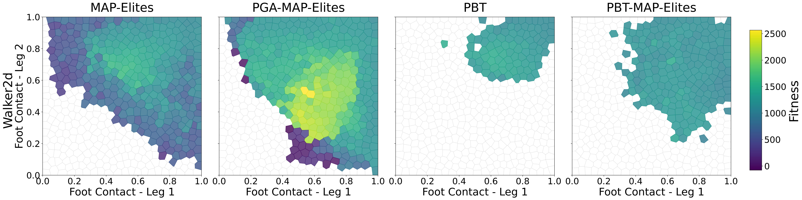
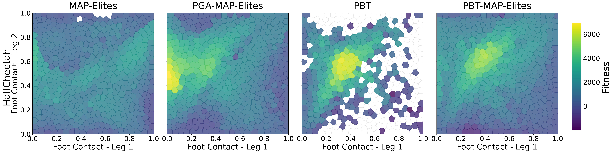

UIT course
Mạng neural và thuật giải di truyền
The official UIT listing titles the course Neural Networks and Genetic Algorithm. Coursework spans neural function approximation and population-based evolutionary search.
CS410.Q21 — Final Project · ICLR 2023 paper review
A reproducibility & analysis report
University of Information Technology (UIT) — VNU-HCM
Course: Mạng neural và thuật giải di truyền · Instructor: TS. Lương Ngọc Hoàng
Reviewing “Evolving Populations of Diverse RL Agents with MAP-Elites” by Arthur Flajolet and Thomas Pierrot, ICLR 2023.

Quality-diversity (QD) methods such as MAP-Elites discover diverse, high-performing solutions by maintaining an archive indexed by behavior descriptors. Deep reinforcement learning, by contrast, optimizes a single agent against a single objective. PBT-MAP-Elites bridges the two: rather than evolving policy weights alone, it evolves whole agents — actor and critic parameters, replay buffers, and hyperparameters — and uses the MAP-Elites grid both for selection and for online hyperparameter search. The framework is agnostic to the inner learner; the paper demonstrates it with both SAC and TD3 on five continuous-control tasks from QDax/Brax, including deceptive trap environments where reward-only baselines collapse.
This page is our CS410.Q21 final project deliverable. We summarise the method, walk through the experimental setup the authors propose, show rollout videos and plots from our reproduction work, and discuss the headline results.
CS410.Q21 is the UIT course on neural networks and evolutionary search. Our motivation for choosing this paper is that it lies precisely on the boundary the course is designed to study.
UIT course
The official UIT listing titles the course Neural Networks and Genetic Algorithm. Coursework spans neural function approximation and population-based evolutionary search.
Syllabus fit
MAP-Elites is an evolutionary algorithm. SAC and TD3 are deep RL policies. PBT-MAP-Elites composes them into a single optimization loop — exactly the pairing the syllabus asks students to study.
Deliverable
The syllabus reserves the final weeks for a group project seminar. This page is the public form of that deliverable — a project page first, a paper landing page second.
PBT-MAP-Elites is a population-based training loop wrapped around a MAP-Elites archive. The archive seeds the next individuals to train, and the population update supports online hyperparameter adaptation alongside the policy updates.
Vanilla MAP-Elites fills a behavior-descriptor archive by random mutation of solution parameters. Vanilla deep RL drives a single agent toward a single objective. Neither alone gives you a repertoire of high-performing, behaviorally distinct policies in continuous-control settings.
PBT-MAP-Elites closes the gap. It maintains a population of complete agents — actor weights, critic weights, replay buffer, and hyperparameters — and uses the MAP-Elites grid both as a selection mechanism and as a hyperparameter search engine. The same framework works whether the inner learner is SAC or TD3.
The training loop alternates between two updates. The population update ranks the current agents by fitness: the bottom p% are replaced by copies of agents sampled from the top n%, and a fraction k of the middle band is replaced by random samples from the MAP-Elites repertoire. When agents are replaced, their hyperparameters are resampled from a pre-specified range — they are not copied from the strong agents. The repertoire update then runs the usual MAP-Elites step: pick a parent from the repertoire, apply the isoline variation operator to its policy and learnable parameters (offspring do inherit the parent's hyperparameters here), evaluate, and insert into the descriptor cell. Diversity comes from the archive, fitness from the RL inner loop, and exploration over the hyperparameter space comes from the population update.
The authors evaluate on five continuous-control tasks from QDax/Brax, spanning straightforward locomotion and deceptive trap exploration.
Locomotion
Uni-directional locomotion tasks probe whether algorithms can cover a contact-pattern descriptor space while maintaining strong forward speed.
Exploration
Deceptive trap layouts embed a local reward optimum behind an obstacle. Reaching the true goal requires the exploration pressure MAP-Elites supplies for free.
Metrics
Comparisons report archive coverage, total QD score, and best-elite fitness across multiple seeds — the standard battery for quality-diversity work.
Randomly sampled archive-cell rollouts from the two recoverable team video archives: four Walker2d-Uni elites and four AntTrap elites. Each card lists its source cell, fitness, and behavior descriptor; the source mapping is recorded in the rollout manifest. Starting one video pauses the others.
The paper figure previously shown here has been replaced with our team plots. These are reproduction-scale runs, not the paper's full benchmark, so they should be read as evidence from our implementation work rather than as a replacement for the authors' reported numbers.







The takeaway for the course is that the archive is doing real work. Max fitness alone says whether one policy got fast; QD score and coverage show whether the method found a repertoire of behaviorally different elites.
If you reference the paper, please cite the authors directly:
@inproceedings{flajolet2023evolving,
title = {Evolving Populations of Diverse {RL} Agents with {MAP}-Elites},
author = {Flajolet, Arthur and Pierrot, Thomas},
booktitle = {International Conference on Learning Representations (ICLR)},
year = {2023},
url = {https://openreview.net/forum?id=CBfYffLqWqb}
}We thank Arthur Flajolet, Thomas Pierrot, and the QDax team for releasing the codebase and the example notebooks that made this study possible. The rollout videos on this page were generated by the project team using the upstream QDax repository. The page is maintained as a CS410.Q21 final-project deliverable under the supervision of TS. Lương Ngọc Hoàng, University of Information Technology (UIT).